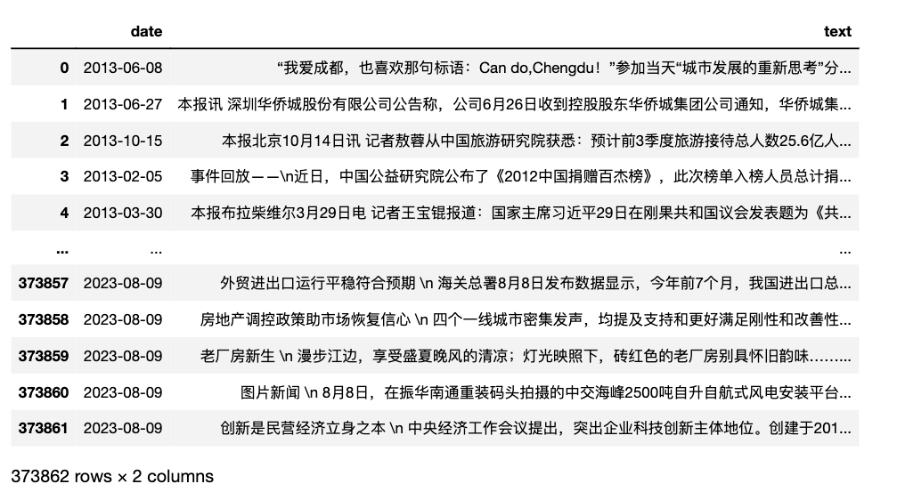
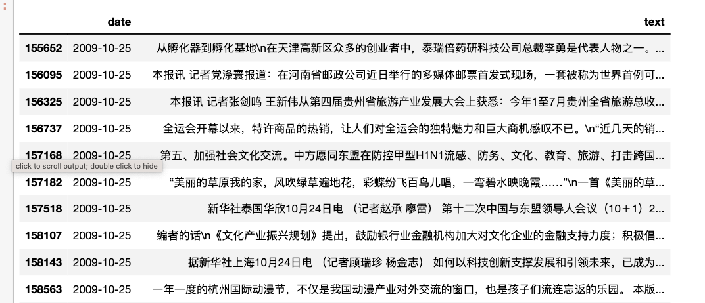
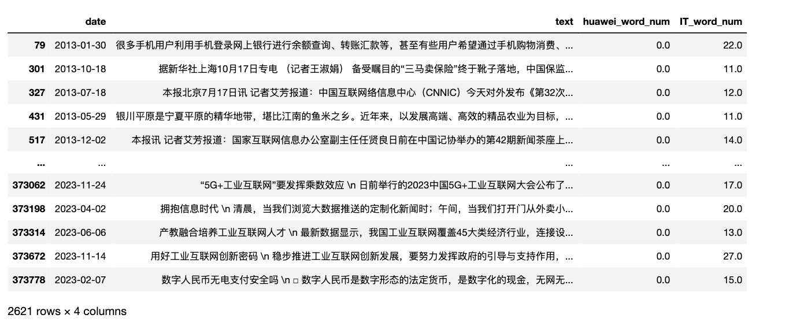

新闻日报类数据集，含 人民日报、 光明日报、人民政协报、经济日报、中国青年报、 南方周末、新闻联播 等。
一、 研究用途
新闻日报类数据 可提取丰富的指标，包括但不限于 **经济政策不确定性指数 **、 媒体关注度指数、文本相似度、情感分析。此外， 可训练词向量，开发新的概念词典。数据带时间， 参照前面指标， 依主体、日期、指标进行计算， 可构造面板数据，构建新的指标指数。因此在经济学、管理学、新闻传播学、公共管理、社会学等领域均有较高的研究价值。
相关参考文献
[1]洪永淼,刘俸奇,薛涧坡.政府与市场心理因素的经济影响及其测度[J].管理世界,2023,39(03):30-51.
[2]刘景江,郑畅然,洪永淼.机器学习如何赋能管理学研究？——国内外前沿综述和未来展望[J].管理世界,2023,39(09):191-216.
[3]张一帆,林建浩,樊嘉诚.新闻文本大数据与消费增速实时预测——基于叙事经济学的视角[J].金融研究,2023,(05):152-169.
[4]Huang, Yun, and Paul Luk. "Measuring economic policy uncertainty in China." China Economic Review 59 (2020): 101367
[5]欧阳资生,陈世丽,杨希特,刘凤根,周学伟.经济政策不确定性、网络舆情与金融机构系统性风险[J].管理科学学报,2023,26(04):62-86.
[6]逯东,宋昕倍.媒体报道、上市公司年报可读性与融资约束[J].管理科学学报,2021,24(12):45-61.
[7]彭涛,黄福广,孙凌霞.经济政策不确定性与风险承担:基于风险投资的证据[J].管理科学学报,2021,24(03):98-114.
[8]庞锐.采纳与内化：多重制度压力如何影响河长制创新扩散——基于省级政府的定向配对事件史分析[J].公共管理学报,2023,20(02):25-37+165-166.
二、 数据集
2.1 数据集概况
除 新闻联播 ，每天全部新闻存储到一个 TXT； 其余媒体， 每条新闻存储到一个 TXT。
数据集是通过 PYTHON 网络采集、数据清洗， 方便各位基于 公众号(博客)： 大邓和他的PYTHON 内的代码，构造概念词典面板数据
2.1.1 人民日报
数据来源: 人民日报
覆盖日期: 1946-05-15 ~ 2023-12-18
新闻条数: 2014661
文件体积: 2.98G
购买价格: 40 元/年, TXT格式; 整卖 1000 元(TXT、CSV)
2.1.2 光明日报
数据来源: 光明日报
覆盖日期: 1985-01-01 ~ 2023-12-18
新闻条数: 853348
文件体积: 1.47G
购买价格: 20 元/年, TXT格式; 整卖 500 元(TXT、CSV)
2.1.3 人民政协报
数据来源: 人民政协报
覆盖日期: 2008-01-02 ~ 2023-12-18
新闻条数: 339047
文件体积: 616M
购买价格: 20 元/年, TXT格式; 整卖 200 元(TXT、CSV)
2.1.4 经济日报
数据来源: 经济日报
覆盖日期: 2008-01-27 ~ 2023-12-18
新闻条数: 373862
文件体积: 729M
购买价格: 20 元/年, TXT格式; 整卖 200 元(TXT、CSV)
2.1.5 中国青年报
数据来源: 中国青年报
覆盖日期: 2005-01-01 ~ 2023-12-18
新闻条数: 322735
文件体积: 760M
购买价格: 20 元/年, TXT格式; 整卖 200 元(TXT、CSV)
2.1.6 南方周末
数据来源: 南方周末
覆盖日期: 2008-01-02 ~ 2023-05-31
新闻条数: 75788
文件体积: 284M
购买价格: 20 元/年, TXT格式; 整卖 200 元(TXT、CSV)
2.1.8 新闻联播
数据来源: 新闻联播
覆盖日期: 2006-09-01 ~ 2023-12-18
记录数量: 6318(每天一个txt)
文件体积: 136M
购买价格: 20 元/年, TXT格式; 整卖 100 元(TXT、CSV)
2.2 购买数据
人民日报: 40 元/年, TXT格式; 整卖 1000 元(TXT、CSV)
光明日报: 20 元/年, TXT格式; 整卖 500 元(TXT、CSV)
人民政协报: 20 元/年, TXT格式; 整卖 200 元(TXT、CSV)
经济日报: 20 元/年, TXT格式; 整卖 200 元(TXT、CSV)
中国青年: 20 元/年, TXT格式; 整卖 200 元(TXT、CSV)
南方周末: 20 元/年, TXT格式; 整卖 200 元(TXT、CSV)
新闻联播: 10 元/年, TXT格式; 整卖 100 元(TXT、CSV)
所有数据集打包优惠价 1688 元， 支持开票。
需要的请加微信372335839，备注【姓名-学校-专业-news】
更多数据集，请查看 LIST | 可供社科(经管)领域使用的数据集汇总
三、实验代码
新闻类数据集内有 txt 和 csv两种格式， 推荐使用 csv 进行数据分析。 后续我们也会持续围绕着新闻类数据集 (CSV格式) 进行持续的内容更新。
3.1 读取csv
以 经济日报/ jjrb.csv.gzip 为例
压缩文件 jjrb/csvs/2022.csv.gzip 可直接读取
import pandas as pd
# 当前代码所在的ipynb文件 与 「jjrb文件夹」是兄弟辈关系，同处于一个文件夹内
df = pd.read_csv('经济日报/jjrb.csv.gzip', compression='gzip')
#也可解压后再读取csv， 两者功效等同，但前者读取更快。
#df = pd.read_csv('经济日报/jjrb.csv')
df
Run
17394

3.2 日期操作
3.2.1 更改日期类型
首先要更改日期类型为datetime型， 这样方便后续日期的筛选和计算
df['date'] = pd.to_datetime(df['date'])
3.2.2 日期的最大(小)值
print(df['date'].max())
print(df['date'].min())
Run
2023-12-18 00:00:00
2008-01-27 00:00:00
3.2.3 筛选指定日期记录
date_mask1 = '2009-10-25'
#date_mask2 = '2009-10'
#date_mask3 = '2009'
df[df['date']==date_mask1]

3.2.4 .dt
.dt可以查看 年year、月month、 日day， 查看年份
df['date'].dt.year
Run
0 2013
1 2013
2 2013
3 2013
4 2013
...
373857 2023
373858 2023
373859 2023
373860 2023
373861 2023
Name: date, Length: 373862, dtype: int32
3.3 文本操作
3.3.1 是否含某(类)词
如检索 jjrb 中text字段中是否提到了「华为」这个词，至少出现一次，标记为True
df['text'].str.contains('华为')
Run
0 False
1 False
2 False
3 False
4 False
...
373857 False
373858 False
373859 False
373860 False
373861 False
Name: text, Length: 373862, dtype: object
text字段中提及「IT」相关词，如电脑、手机、互联网、app等，至少出现一次，标记为True
df['text'].str.contains('电脑|手机|互联网|app')
Run
0 False
1 False
2 False
3 False
4 False
...
373857 True
373858 False
373859 False
373860 False
373861 True
Name: text, Length: 373862, dtype: object
3.3.2 含某(类)词记录数
统计 经济日报 中出现 华为 、华为相关词 的新闻数量
huawei_record_num = df['text'].str.contains('华为').sum()
IT_record_num = df['text'].str.contains('电脑|手机|互联网|app').sum()
print(huawei_record_num)
print(IT_record_num)
Run
2994
40674
3.3.3 含某类词个数
每条新闻中含某(类)词的个数
df['huawei_word_num'] = df['text'].str.count('华为')
df['IT_word_num'] = df['text'].str.count('电脑|手机|互联网|app')
df[df['huawei_word_num']>0]

IT_word_num的最大值、中位数、均值、最小值
print('IT max:', df['IT_word_num'].max())
print('IT median:', df['IT_word_num'].median())
print('IT mean:', df['IT_word_num'].mean())
print('IT min:', df['IT_word_num'].min())
Run
IT max: 283.0
IT median: 0.0
IT mean: 0.3806961871084083
IT min: 0.0
3.4 按条件筛选
按照字段 IT_word_num，筛选出值大于10的记录。即新闻中至少出现10次IT词的记录
df[df['IT_word_num']>10]

多条件筛选, 结合且或非
#筛选出IT_word_num大于15， 且小于20
df[(df['IT_word_num']>15) & (df['IT_word_num']<20)]

#筛选出IT_word_num大于10， 或 huawei_word_num大于10
df[(df['IT_word_num']>10) | (df['huawei_word_num']>10)]

3.5 .apply
选择某字段，对该字段批量计算. 这里以统计某类概念词个数为例。是df[‘text’].str.count的另类实现方法
#df['IT_word_num'] = df['text'].str.count('电脑|手机|互联网|app')
def count_IT(text):
result = 0
keywords = ['电脑', '手机', '互联网', 'app']
for keyword in keywords:
result = result + text.count(keyword)
return result
#这两种算法结果是相同的，但是apply遇到nan数据会报错，所以这里都统一对nan替换为''
df['IT_word_num'] = df['text'].fillna('').str.count('电脑|手机|互联网|app')
df['IT_word_num2'] = df['text'].fillna('').apply(count_IT)
3.6 Groupby分组
按月份逐月保存到csv中，首先要对dataframe进行分组，这里用到pd.Grouper(key, freq)
- key 根据某字段进行分组
- freq 周期，
年Y 月M 日D
for date, year_df in df.groupby(pd.Grouper(key='date', freq='Y')):
#这里的date， month_df都是特殊数据类型
print(type(date), type(year_df))
Run
<class 'pandas._libs.tslibs.timestamps.Timestamp'> <class 'pandas.core.frame.DataFrame'>
<class 'pandas._libs.tslibs.timestamps.Timestamp'> <class 'pandas.core.frame.DataFrame'>
<class 'pandas._libs.tslibs.timestamps.Timestamp'> <class 'pandas.core.frame.DataFrame'>
<class 'pandas._libs.tslibs.timestamps.Timestamp'> <class 'pandas.core.frame.DataFrame'>
<class 'pandas._libs.tslibs.timestamps.Timestamp'> <class 'pandas.core.frame.DataFrame'>
<class 'pandas._libs.tslibs.timestamps.Timestamp'> <class 'pandas.core.frame.DataFrame'>
<class 'pandas._libs.tslibs.timestamps.Timestamp'> <class 'pandas.core.frame.DataFrame'>
<class 'pandas._libs.tslibs.timestamps.Timestamp'> <class 'pandas.core.frame.DataFrame'>
<class 'pandas._libs.tslibs.timestamps.Timestamp'> <class 'pandas.core.frame.DataFrame'>
<class 'pandas._libs.tslibs.timestamps.Timestamp'> <class 'pandas.core.frame.DataFrame'>
<class 'pandas._libs.tslibs.timestamps.Timestamp'> <class 'pandas.core.frame.DataFrame'>
<class 'pandas._libs.tslibs.timestamps.Timestamp'> <class 'pandas.core.frame.DataFrame'>
<class 'pandas._libs.tslibs.timestamps.Timestamp'> <class 'pandas.core.frame.DataFrame'>
<class 'pandas._libs.tslibs.timestamps.Timestamp'> <class 'pandas.core.frame.DataFrame'>
<class 'pandas._libs.tslibs.timestamps.Timestamp'> <class 'pandas.core.frame.DataFrame'>
<class 'pandas._libs.tslibs.timestamps.Timestamp'> <class 'pandas.core.frame.DataFrame'>
for date, month_df in df.groupby(pd.Grouper(key='date', freq='M')):
#可以抽取出date中的年月信息
print(date.year, date.month, type(month_df))
Run
2008 1 <class 'pandas.core.frame.DataFrame'>
2008 2 <class 'pandas.core.frame.DataFrame'>
2008 3 <class 'pandas.core.frame.DataFrame'>
2008 4 <class 'pandas.core.frame.DataFrame'>
2008 5 <class 'pandas.core.frame.DataFrame'>
2008 6 <class 'pandas.core.frame.DataFrame'>
2008 7 <class 'pandas.core.frame.DataFrame'>
2008 8 <class 'pandas.core.frame.DataFrame'>
2008 9 <class 'pandas.core.frame.DataFrame'>
......
2023 1 <class 'pandas.core.frame.DataFrame'>
2023 2 <class 'pandas.core.frame.DataFrame'>
2023 3 <class 'pandas.core.frame.DataFrame'>
2023 4 <class 'pandas.core.frame.DataFrame'>
2023 5 <class 'pandas.core.frame.DataFrame'>
2023 6 <class 'pandas.core.frame.DataFrame'>
2023 7 <class 'pandas.core.frame.DataFrame'>
2023 8 <class 'pandas.core.frame.DataFrame'>
2023 9 <class 'pandas.core.frame.DataFrame'>
2023 10 <class 'pandas.core.frame.DataFrame'>
2023 11 <class 'pandas.core.frame.DataFrame'>
2023 12 <class 'pandas.core.frame.DataFrame'>
for date, month_df in df.groupby(pd.Grouper(key='date', freq='M')
#以year-month.csv格式存储数据到csv中
month_df.to_csv(f'{year}-{month}.csv', index=False)
五、购买数据
5.1 价格
人民日报: 40 元/年, TXT格式; 整卖 1000 元(TXT、CSV)
光明日报: 20 元/年, TXT格式; 整卖 500 元(TXT、CSV)
人民政协报: 20 元/年, TXT格式; 整卖 200 元(TXT、CSV)
经济日报: 20 元/年, TXT格式; 整卖 200 元(TXT、CSV)
中国青年: 20 元/年, TXT格式; 整卖 200 元(TXT、CSV)
南方周末: 20 元/年, TXT格式; 整卖 200 元(TXT、CSV)
新闻联播: 10 元/年, TXT格式; 整卖 100 元(TXT、CSV)
所有数据集打包优惠价 1888 元， 支持开票。
需要的请加微信372335839，备注【姓名-学校-专业-news】
5.1 购前须知
1. 付费数据集，50元；加微信 372335839， 备注「姓名-学校-专业」。
2. 数据是虚拟产品，一经售出，不再退还！
3. 大家时间其实都很宝贵，请仔细阅读推文内容， 确认无误再加微信详谈购买事宜
更多数据集，请查看 LIST | 可供社科(经管)领域使用的数据集汇总